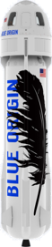

BlueOrigin - Mission New Shepard
BlueOrigin
Blue Origin est une entreprise aérospatiale axée sur l’exploration et la colonisation de l’espace. Son programme phare, New Shepard, vise à offrir des voyages suborbitaux pour le tourisme spatial et la recherche scientifique. Grâce à un puissant moteur réutilisable, le véhicule spatial propulse la capsule vers l’espace, offrant aux passagers une expérience en apesanteur et une vue exceptionnelle de la Terre. Blue Origin aspire à un avenir où des millions de personnes vivront et travailleront dans l’espace, préservant ainsi notre planète pour les générations futures.
New Shepard
- Principaux objectifs :
Premier lanceur réutilisable de Blue Origin pour les vols suborbitaux
6 passagers
Expérience de vol en apesanteur
Propulsion réutilisable
Tourisme spatial pour les passagers.
Expérience de vol en apesanteur.
Collecte de données scientifiques en microgravité.
Atterrissages verticaux réussis.
- Mission :
Lieu de lancement : Van Horn, Texas, États-Unis.
Véhicule spatial réutilisable : Capsule et booster.
Capacité d’emport : Jusqu’à six astronautes ou combinaison passagers-charges utiles.
Propulsion : Moteur de fusée réutilisable BE-3.
Vol suborbital : Altitude pour l’expérience de l’apesanteur sans orbite.
Durée de vol : Environ 10-15 minutes, avec 3-4 minutes d’apesanteur.
Récupération : Atterrissage contrôlé du booster sur une plateforme, descente de la capsule avec parachutes.
Objectifs de recherche : Expériences scientifiques en microgravité.
Perspectives futures : Augmentation des vols, amélioration de la réutilisabilité et diversification des missions.